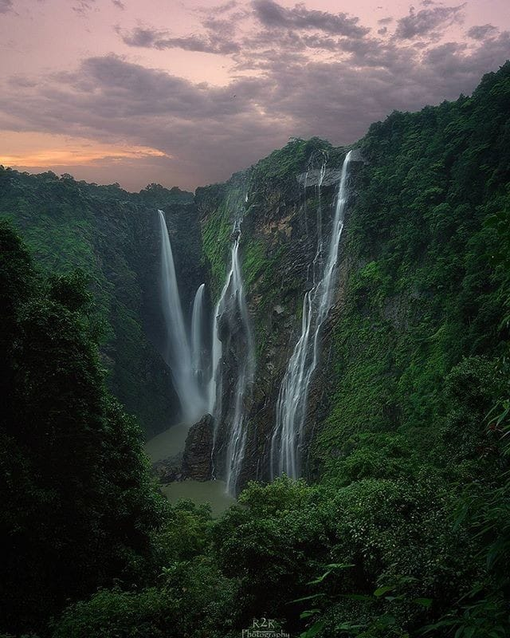

Discovering Jog Falls: Karnataka's Majestic Waterfall
If you’re an avid nature lover, adventurer, or simply someone who appreciates the beauty of India’s landscapes, Jog Falls should be on your bucket list. Located in the Shimoga district of Karnataka, Jog Falls is one of the highest and most magnificent waterfalls in India. Known for its stunning vertical drop and the sheer power of its flow, Jog Falls is a destination that leaves visitors in awe. Let’s dive into the wonders of this natural marvel and discover everything it has to offer.
Location & How to Reach Jog Falls
Jog Falls is located around 30 kilometers from the town of Sagara in the Shimoga district of Karnataka. The falls are part of the Sharavathi River, which cascades down from a height of 253 meters (830 feet) in a series of breathtaking drops.
The nearest major city is Mangalore, about 150 km away, and from there, you can drive to Jog Falls via road. The route takes you through dense forests and scenic views, making the journey even more beautiful. Shimoga, the nearest city to Jog Falls, is well-connected by road and rail, and from there, a short drive will bring you to the falls.
The Magnificent Jog Falls: A Natural Spectacle
Jog Falls, also known as Gerusoppa Falls, is one of the tallest waterfalls in India and the highest in Karnataka. The falls have a unique vertical drop and are divided into four distinct streams:
Raja: The main stream that falls straight down with the most powerful flow, creating a majestic sight.
Rani: A thinner stream that forms an elegant cascade, almost resembling a bridal veil.
Lion: A less powerful stream that flows gently, adding to the charm of the falls.
Tiger: Another stream that crashes down with immense force, contributing to the dramatic effect of the falls.
The sound of water crashing onto the rocks below, combined with the mist that rises into the air, creates a surreal atmosphere. The falls are particularly stunning during the monsoon season (June to September), when the Sharavathi River is at its fullest, but the sight of Jog Falls in the cooler months is equally captivating.

Best Time to Visit Jog Falls
The best time to visit Jog Falls is during the monsoon season (June to September), when the falls are in their full glory. The heavy rainfall enhances the volume of water flowing down the falls, making it a mesmerizing sight to behold. However, the weather can be humid and wet, so be prepared for the conditions.
If you prefer a quieter experience with less crowd, the winter season (October to February) is an excellent time to visit. The weather is cooler, and while the flow of water might be less intense, the falls still provide a stunning view against the backdrop of lush green surroundings.
Things to Do Around Jog Falls
Apart from marveling at the falls, there are several activities and attractions near Jog Falls that you can explore:
Trekking: There are a few trekking trails around the falls, which offer spectacular views of the surrounding forest and the Sharavathi River. The Sharavathi Valley Wildlife Sanctuary, located near Jog Falls, is a great place for nature walks and wildlife spotting.
Visit the Jog Falls Viewpoint: The Jog Falls Viewpoint offers a great vantage point from where you can get an unobstructed view of the entire waterfall. There is also a viewing platform that provides a more up-close experience.
Rani Jhari: A small waterfall located a short distance from Jog Falls, it’s a peaceful spot for a relaxing stop amidst nature.
Boating on the Sharavathi River: If you are interested in water activities, you can explore the nearby Linganamakki Reservoir by boat. The serene waters and the surrounding landscapes are perfect for a calm day on the river.
Photography: Capturing the Magic
For photographers, Jog Falls is a dream destination. Whether you’re capturing the grandeur of the falls, the mist rising up, or the vibrant green forests around, you’re guaranteed to take some stunning shots. The falls look breathtaking in the early morning light or late afternoon, with the golden hues of the sun adding a magical touch to your photos.
If you're passionate about nature and landscape photography, don’t miss out on this fantastic opportunity to capture one of India's most beautiful waterfalls.
Accommodation: Where to Stay
While there are no luxury resorts near Jog Falls, there are several guesthouses, forest rest houses, and budget hotels where you can stay. The Karnataka Tourism Development Corporation (KTDC) runs a guesthouse near the falls, providing basic amenities and a chance to stay close to the natural beauty of the area.
For a more luxurious experience, you can head to nearby towns like Sagara or Shimoga, where there are several hotels and resorts offering comfortable stays.
Nearby Attractions to Explore
Jog Falls is located in a region brimming with natural beauty. While you're in the area, take the time to explore some of these nearby attractions:
Sharavathi Valley Wildlife Sanctuary: A rich ecosystem of flora and fauna, this sanctuary is home to animals like tigers, elephants, and leopards. It’s a great spot for trekking, birdwatching, and nature walks.
Raja's Seat: A picturesque garden in Shimoga offering breathtaking views of the Western Ghats.
Kundadri Hill: Known for its Jain temple and panoramic views of the surrounding hills, this is a great spot for a peaceful escape.
Linganamakki Reservoir: A tranquil spot for boating and scenic views of the Sharavathi River.
Local Cuisine: Savor the Flavors
After a day of exploration, indulge in the local cuisine. Try some of the Karnataka delicacies like Ragi mudde (finger millet balls), Bisi bele bath, Neer dosa, and Akki rotti. There are small eateries and local restaurants in and around the Jog Falls region offering authentic and delicious South Indian food.
Final Thoughts: A Natural Wonder
Jog Falls is undoubtedly one of the most stunning waterfalls in India. Whether you're a nature lover, an adventure seeker, or someone looking for a peaceful retreat, Jog Falls offers an unforgettable experience. Its sheer size and beauty are awe-inspiring, and the surrounding landscape is a perfect blend of serenity and adventure. So pack your bags, head to Jog Falls, and immerse yourself in one of nature’s most incredible spectacles.